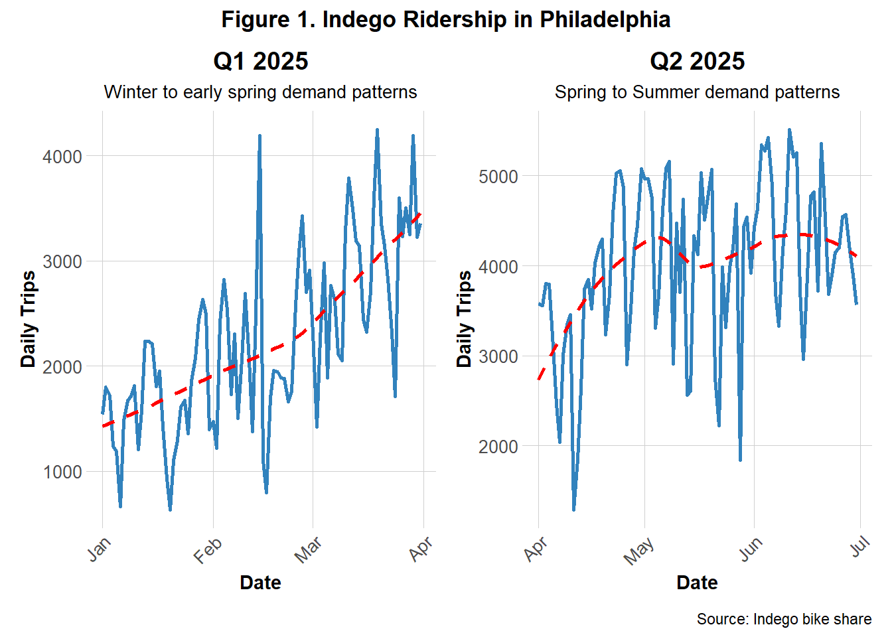
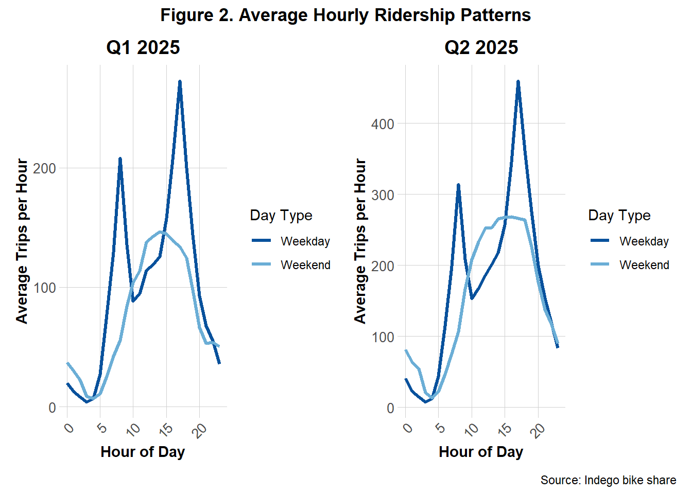
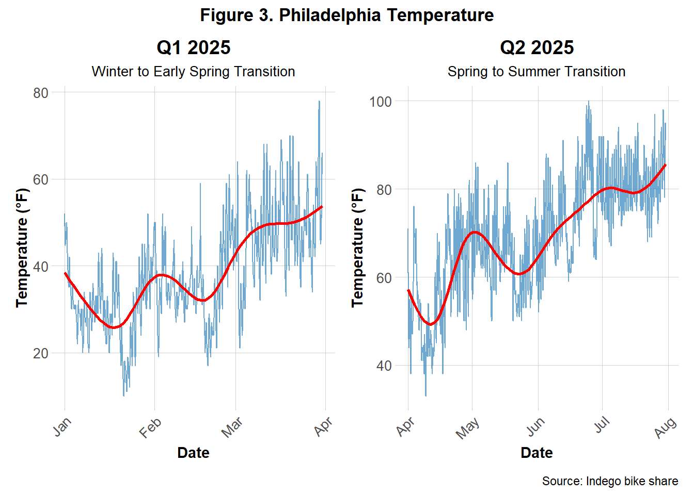
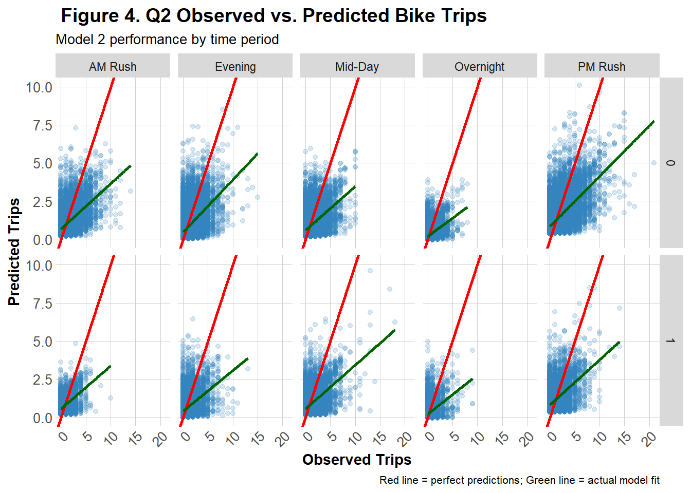
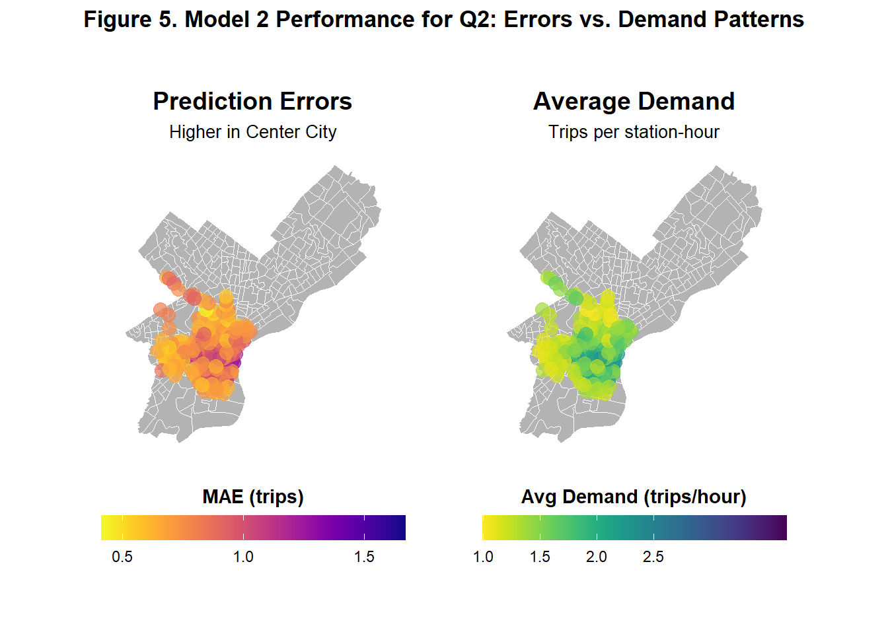
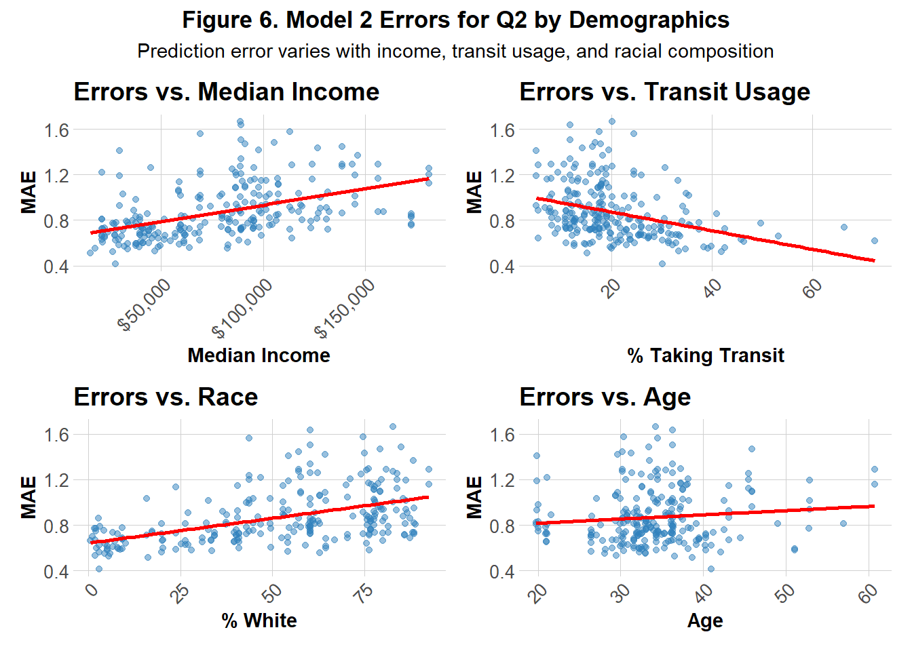
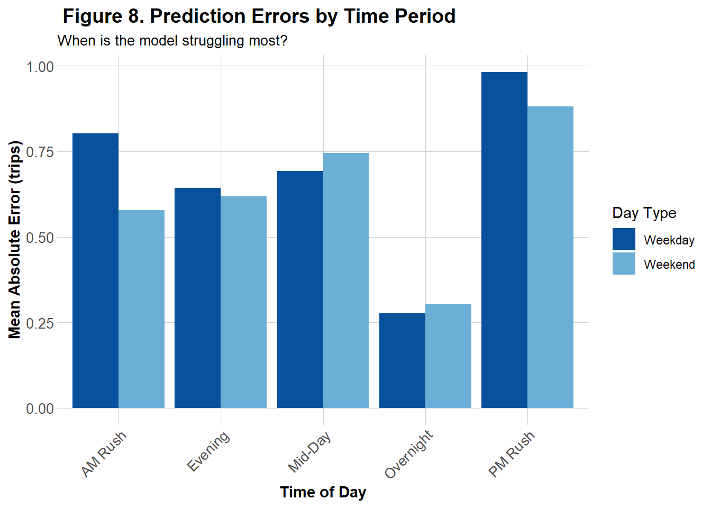
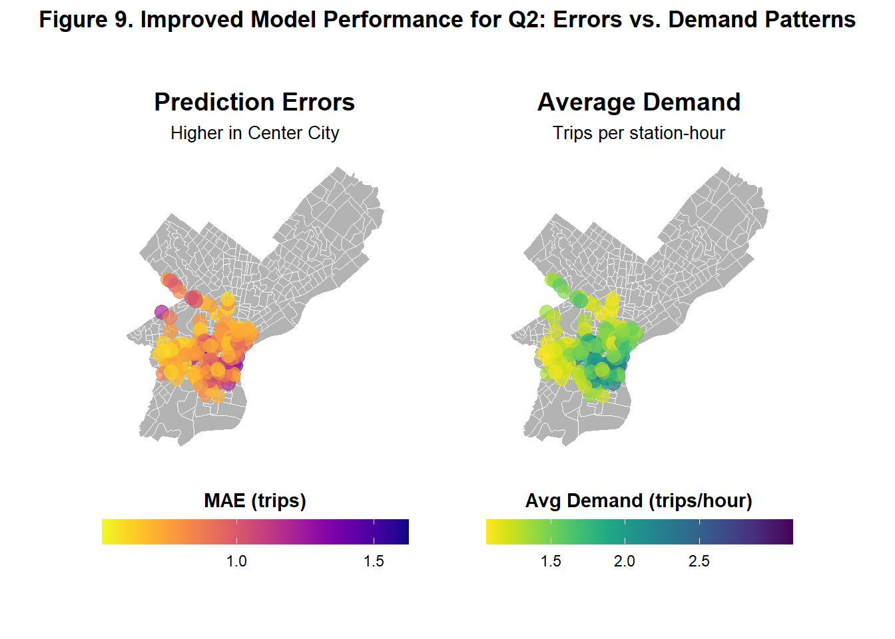
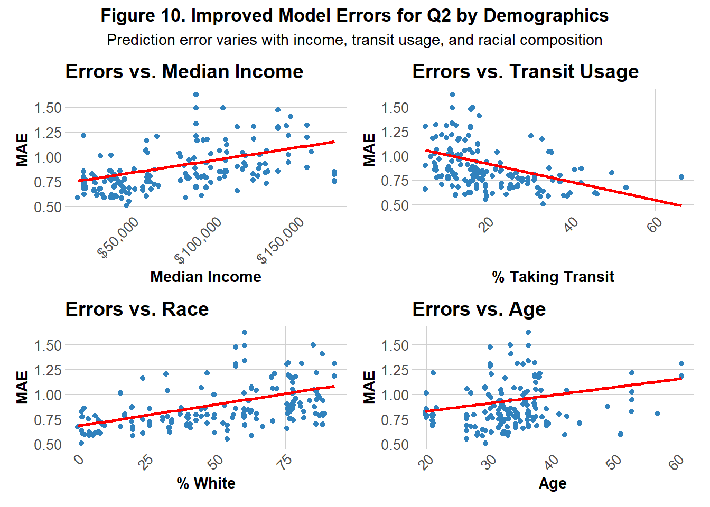

Assignment 5: Space-Time Prediction of Bike Share Demand: Philadelphia Indego
Introduction
After examining the analysis of the Indego bike share data from January through March (Q1), I chose to focus on data from April through July (Q2) to assess whether the same predictive models could be applied independently across quarters. Q1 captures the transition from winter into spring, while Q2 reflects the shift from spring into summer. These seasonal changes theoretically bring more favorable weather conditions and increased outdoor activity, suggesting that discrepancies in demand patterns are to be expected between the two datasets. By comparing Q2 against Q1, my aim is to evaluate the transferability of models developed in Q1 and determine whether they maintain the same level of predictive accuracy when adapted to Q2. In addition, I seek to examine other spatial and temporal variables can further enhance model performance across seasons.
Part 1: Replicating Q1’s Analysis
Comparing Ridership Demands Q1 and Q2
To better understand the differences in demands between Q1 and Q2, Figures 1 and 2 present side‑by‑side comparisons of each quarters’ daily and hourly trip counts.
Figure 1 shows the daily bike share demands in Q1 and Q2. The trend lines clearly illustrate a significant rise in daily ridership during Q2, as anticipated. Q1 shows a general upwards trend from January to April while Q2 shows a more rounded, gradual rise and gentle decline from April to July. This suggests that ridership increased in the Q2 as well as remained consistently in these higher demands. Both quarters contained fluctuations of stark increases and decreases, likely representing short-term impacts of events or holidays.

Figure 2 shows the average hourly bike share demand, separated by weekdays and weekends, for Q1 and Q2. Consistent with the findings from Figure 1, overall ridership per hour in Q2 was greater than in Q1. Despite this increase, the weekday and weekend demand patterns remain largely consistent across quarters. Weekdays exhibit sharp peaks of demands during commuting hours (between 5–10 AM and 3–8 PM), while weekends display more gradual, rounded increases and declines throughout the day.
Comparing Weather Patterns for Q1 and Q2

Figure 3 illustrates seasonal temperature trends across Q1 and Q2 of 2025. Q1 temperatures remain relatively cool with a steady upward trend, while Q2 exhibits a sharper increase and overall higher temperatures. These graphs reinforcing the seasonal shifts and temperature changes that were inferred to parallel bike demands.
Model Evaluation for Q1 and Q2
For both Q1 and Q2, the same five predictive models developed for Q1 were applied, and their accuracy was evaluated and compared across models and quarters. Table 1 shows the results of each model’s performance for both quarters.
| Model | Q1 MAE (trips) | Q2 MAE (trips) |
|---|---|---|
| 1. Time + Weather | 0.60 | 0.82 |
| 2. + Temporal Lags | 0.50 | 0.62 |
| 3. + Demographics | 0.74 | 0.86 |
| 4. + Station FE | 0.73 | 0.86 |
| 5. + Rush Hour Interaction | 0.73 | 0.90 |
For each quarter, all weeks except the final three were used to train the predictive models, while the remaining three weeks served as the test set to evaluate predictive accuracy. This train–test split was designed to assess how well past data could predict future unseen observations. Five models were created, ranging from simple to more complex, each building upon the last. For each, the combined Mean Absolute Error (MAE) was calculated to measure overall prediction error. The temporal lags introduced in Model 2 emerged as the most influential features as the model had the lowest MAE across both quarters. Model performance was weaker in Q2, with higher MAE values compared to Q1, indicating that the models struggled more to capture patterns during the spring and early summer period.
Part 2: Error Analysis
A more detailed examination of the best performing model’s limitations was conducted by focusing on the error patterns the model produced for Q2. This deeper analysis explores the spatial, temporal, and demographic patterns in the model’s predictions.
Temporal Errors Patterns

The graph in Figure 4 offers a detailed view of Model 2’s predictive performance for Q2 across time-of-day.Each scatter plot compares predicted versus observed trip counts on weekends and weekdays across five segmented time periods (AM Rush, Mid-Day, PM Rush, Evening, Overnight). The red diagonal line represents perfect prediction while the green regression line shows the actual fit of the data. Across most panels, the green line deviates below the red line, indicating the model consistently estimated more trips than were actually observed. This pattern is more pronounced on the weekend panel (bottom row) and overnight and mid-day periods on weekdays, suggesting that the model struggled more predicting outside of the commuting rush.
Spatial Error Patterns

Figure 5 shows illustrates side-by-side how Model 2’s prediction errors and average demand vary spatially across Philadelphia in Q2. The left map shows that prediction errors are highest in Center City and slightly higher in parts of Upper North Philadelphia and West Philadelphia. The right map reveals that demand is also concentrated similarly in these area, suggesting that the model performs worst demand is high and thus prediction is more crucial.
Errors and Demographics

Figure 6 illustrates the model’s performance across 4 demographic features: median income, age, percentage of white residents and percentage of those who use transit. Prediction errors show a positive correlation with median income and the percentage of white residents, suggesting that the model tends to over- or under-predict in wealthier and predominantly white neighborhoods. A more subtle positive relationship is observed with age, indicating slightly larger errors in older communities. In contrast, a strong negative correlation emerges between transit usage and errors, highlighting that the model performs more accurately in transit-dependent areas.
Part 3: Attempting Model Improvement
Based on the spatial demand and error patterns shown in Figure 5, Model 2 was built upon by incorporating two spatial features: the density of bike networks and the density of low‑density residential areas. Theoretically, low‑density residential areas were expected to exhibit a negative correlation with bikeshare demand, as fewer residents would hypothetically translate to lower usage. In contrast, higher densities of bike networks were hypothesized to be positively correlated with demand, since the presence of established infrastructure and safety guards may encourage more rentals. To evaluate performance, the MAE for the model was calculated and compared visually side-by-side with Model 2’s original MAE.

Figure 7 illustrates that, when using Model 2 as the base of the improved model, the MAE improved slightly when additional spatial features were incorporated.
Temporal Errors Patterns

Figure 8 represents the MAE of the the improved model across 5 segmented time periods for both weekends and weekdays. While Model 2 tended to overpredict trip counts during low-demand periods, particularly overnight and mid-day on weekends and weekdays (see Figure 4), the improved model exhibited its highest mean absolute errors during the PM followed by AM Rush. This contrast suggests that Model 2 struggles more outside of rush hours, whereas the improved model has struggles more during peak commuting hours.
Spatial Error Patterns

Figure 9 shows the same errors and demand comparison graph as Figure 6, this time for the improved model. The graph follows the same spatial patterns in errors and demand as the previous model but at a higher magnitude as more of the dark shades that represent higher numbers for both graphs can be seen.
Errors and Demographics

Figure 10 reveals similar trends to the original model in Figure 6, but with lower y-intercepts, indicating an overall reduction in prediction errors across all demographic groups for the improved model. One notable difference is the relationship with age as the improved model exhibits a slightly steeper positive linear association between age MAE, suggesting it may struggle more to accurately predict for older individuals compared to the previous model.
Reflection
Even after attempts to improve the model, I would not recommend it for informing Indego’s bike rebalancing strategy. The final MAE (0.58) indicates that predictions are, on average, off by about half a trip. While the model performs better during low-demand periods such as overnight hours, it struggles during peak demand times when accurate forecasts are most critical. Inaccurate deployment during decreased demands is likely to be less impactful than during increased demands when bikes are more likely to be needed as well as more likely to not be available.
From a demographic perspective, predominantly white, wealthier, and older neighborhoods appear more prone to prediction errors compared to transit-oriented communities. This discrepancy may partly reflect differences in data availability as it could indicate younger, more diverse, and less wealthy neighborhoods may use bikeshare more, providing the model with richer training data. Because demographic variables were measured at the census tract level where bike stations were located, they may not fully capture actual ridership patterns. Spatial error maps highlight areas such as Center City, parts of West Philadelphia, and Upper North Philadelphia, which show both high demand and high errors. These findings for these historically whiter and wealthier neighborhoods in addition to demographic error patterns suggest that bikeshares might attract commuters and visitors external to the neighborhoods bikeshares are located in.
Therefore, in future attempts to improve this model, I would attempt to capture and include more temporal, spatial, and demographic based on commuters data.